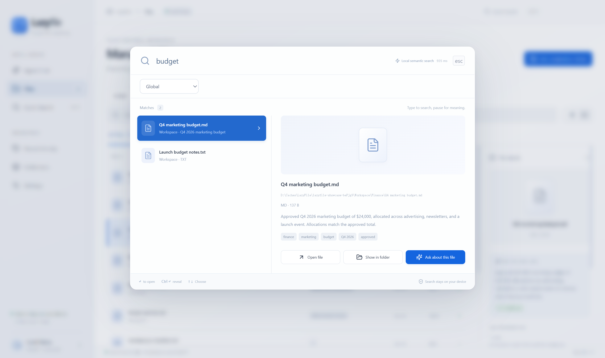
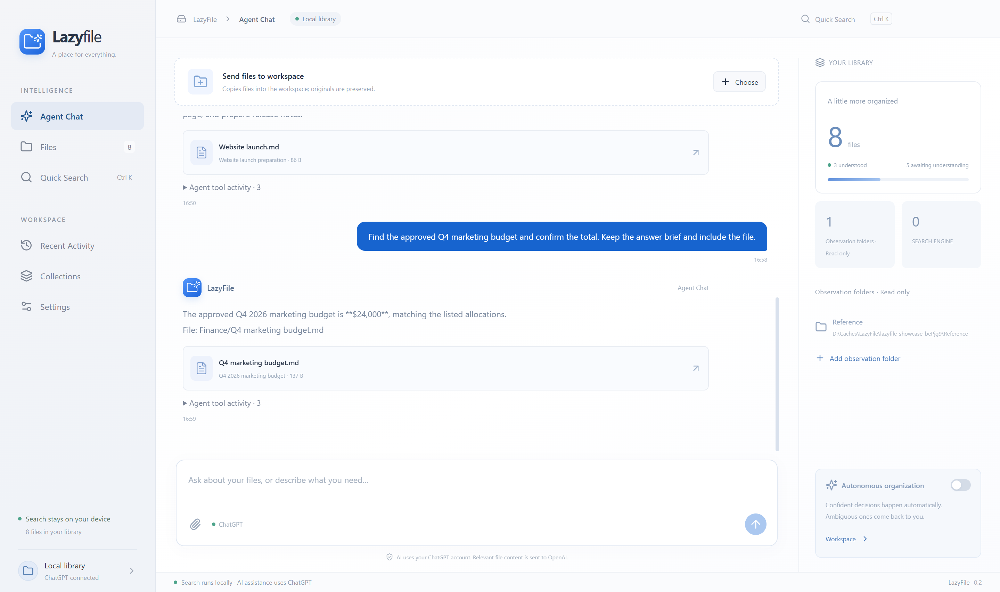

按意思查找
试试“上个季度的预算”。本地语义搜索不只匹配文件名，准确的关键词和发票编号也能直接搜索。
上个季度的预算、旅行笔记，还有那份不记得存在哪的文档。用你记得的线索，让 LazyFile 帮你找到文件。

少一点寻找，多一点生活。
为每天与文档、笔记和项目资料打交道的人，做一个专注文件查找的桌面工具。
试试“上个季度的预算”。本地语义搜索不只匹配文件名，准确的关键词和发票编号也能直接搜索。
让助手找到文档，再确认其中的细节。结合搜索、逐层浏览与阅读原文，结果附上可以打开的文件卡片。
添加多个只读的仅观察文件夹即可搜索。需要接收和整理文件时，再设置一个可选的工作空间。
LAZYFILE ASSISTANT
“找到已批准的第四季度营销预算，确认总金额。”助手在授权范围内搜索，并阅读文档后回答。

你的文件，你来决定。
快捷搜索的索引和向量模型推理在电脑上运行。首次模型准备完成后，无需登录 ChatGPT，也可离线查找。
智能助手是可选功能，通过你的 ChatGPT 账户处理请求，相关文件内容会发送给 OpenAI。LazyFile 的登录和配置独立保存，不影响已有的 Codex。
LazyFile 是开源桌面文件查找工具，结合本地语义搜索、关键词检索，以及可以浏览和读取授权文件的可选 AI 助手。
LazyFile 采用 MIT 许可证，可直接下载，无需订阅 LazyFile。本地搜索不需要 ChatGPT 账户；智能助手受你的 ChatGPT 账户权限和使用额度限制。
当前安装包支持 64 位 Windows 10/11。macOS 是开发目标，尚无经过验证的 Mac 安装包。
本地快捷搜索在电脑上完成。使用智能助手或 AI 文件理解时，相关文本、图片及工具结果会发送给 OpenAI。仅观察文件夹保持只读。
不需要。助手引擎已经内置，搜索模型由欢迎引导自动下载。使用助手时，请在 LazyFile 内单独登录。
DigUp 引擎支持检索受支持的文档、图片、音频、视频和代码。文件清单每个根目录最多扫描 5,000 个文件。助手文本提取上限为 60,000 字符和 PDF 前 40 页，聊天中的音视频理解仅限元数据。小文件库可能没有纯语义匹配，可以尝试准确关键词或让助手浏览查找。
仅观察文件夹不会被修改。发送到可选工作空间的文件采用复制方式，保留原文件。开启自主整理后，助手可移动工作空间内的文件，并保留记录；满足条件时支持撤销。